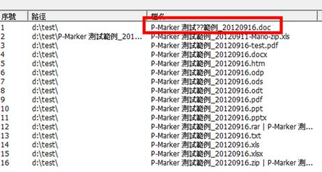

使用者使用檔案搬移功能後，若有檔案無法搬移，系統會將這些檔案列入搬移失敗清單。若有失敗情況發生，使用者可以依照下列說明尋找可能原因：
(1) 檔案名稱或是檔案路徑中有 P-Marker Reader 無法辨識的字元。
使用者可觀看P-Marker Reader 的檔案路徑和檔名欄位是否有「?」確認是否屬此原因，確認屬此原因建議修改檔案路徑或名稱後再次進行搬移）

(2) 檔案是唯讀狀態，故無法進行搬移。
(3) 檔案毀損無法開啟，故無法進行搬移。（註：使用者可以開啟該檔案觀察是否是屬此原因。）
(4) 此檔案屬於某壓縮檔中的檔案，故系統無法單獨對其搬移。